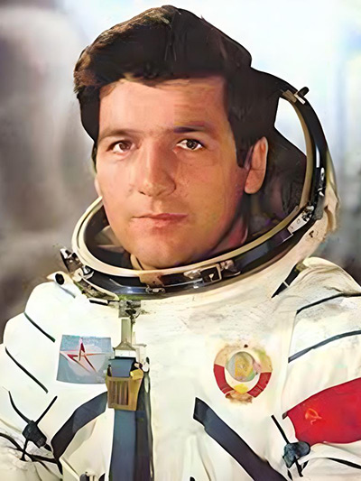
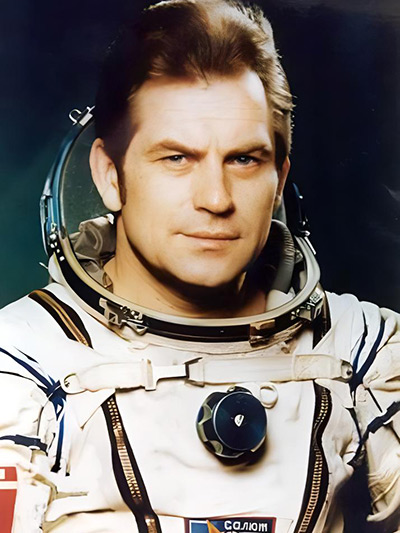
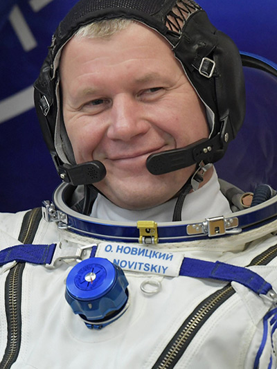
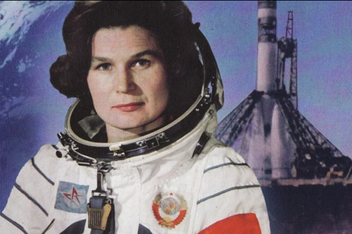

Белорусский след в космосе и космонавтике
Летчик-космонавт, дважды Герой Советского Союза, генерал-полковник Пётр Климук стал первым из белорусов, кто отправился в космос. Продолжительность трех его полетов составляет 78 суток 18 часов 18 минут 42 секунды. В декабре 1973 года он впервые провел неделю на корабле «Союз-13». Свои впечатления от «путешествия» на орбиту космонавт описал в книге «Зоры – побач. Кніга аднаго палёту». На его родине в 1978 году был открыт музей космонавтики.
Eщё один белорусский покоритель космоса – Владимир Ковалёнок, генерал-полковник авиации, дважды Герой Советского Союза, также совершил три полета в космос – в 1977-м, 1978-м и 1981 году. В общей сложности он провел в космосе 216 суток, в том числе два часа – в открытом космосе.
Командир корабля «Союз ТМА-06М» Олег Новицкий возглавил экипаж, который 23 октября 2012 года полетел к Международной космической станции. Продолжительность полета достигла 143 суток. Второй его космический полет состоялся 17 ноября 2016 года. 9 апреля 2021 года он совершил третий полет в космос на пилотируемом корабле «Ю.А. Гагарин» («Союз МС-18»). Олег Новицкий и бортинженер Петр Дубов выполнили пять выходов в открытый космос.
Белорусские корни имеет и первая в мире женщина-космонавт Валентина Терешкова (ее отец Владимир Аксёнович был родом из деревни Выйлово Белыничского района Могилевской области, а мать Елена Фёдоровна – из деревни Еремеевщина Дубровенского района Витебской области). Валентина Терешкова в качестве командира космического корабля «Восток-6» совершила космический полет 16–19 июня 1963 года по программе группового полета с кораблем «Восток-5». За это время космическому кораблю удалось 48 раз облететь вокруг Земли.
Второй родиной Беларусь стала и для космонавтов Олега Артемьева, Антона Шкаплерова, Георгия Гречко. В 2018 году на улице Космонавтов в Минске был установлен памятник в честь трех белорусских космонавтов – Петра Климука, Владимира Ковалёнка и Олега Новицкого.